Sanity Checks for Saliency Maps
Julius Adebayo∗ , Justin Gilmer♯ , Michael Muelly♯ , Ian Goodfellow♯ , Moritz Hardt♯† , Been Kim♯ juliusad@mit.edu , {gilmer,muelly,goodfellow,mrtz,beenkim}@google.com
♯ Google Brain
† University of California Berkeley
Abstract
Saliency methods have emerged as a popular tool to highlight features in an input deemed relevant for the prediction of a learned model. Several saliency methods have been proposed, often guided by visual appeal on image data. In this work, we propose an actionable methodology to evaluate what kinds of explanations a given method can and cannot provide. We find that reliance, solely, on visual assessment can be misleading. Through extensive experiments we show that some existing saliency methods are independent both of the model and of the data generating process. Consequently, methods that fail the proposed tests are inadequate for tasks that are sensitive to either data or model, such as, finding outliers in the data, explaining the relationship between inputs and outputs that the model learned, and debugging the model. We interpret our findings through an analogy with edge detection in images, a technique that requires neither training data nor model. Theory in the case of a linear model and a single-layer convolutional neural network supports our experimental findings2 .
1 Introduction
As machine learning grows in complexity and impact, much hope rests on explanation methods as tools to elucidate important aspects of learned models [1, 2]. Explanations could potentially help satisfy regulatory requirements [3], help practitioners debug their model [4, 5], and perhaps, reveal bias or other unintended effects learned by a model [6, 7]. Saliency methods3 are an increasingly popular class of tools designed to highlight relevant features in an input, typically, an image. Despite much excitement, and significant recent contribution [8–21], the valuable effort of explaining machine learning models faces a methodological challenge: the difficulty of assessing the scope and quality of model explanations. A paucity of principled guidelines confound the practitioner when deciding between an abundance of competing methods.
We propose an actionable methodology based on randomization tests to evaluate the adequacy of explanation approaches. We instantiate our analysis on several saliency methods for image classification with neural networks; however, our methodology applies in generality to any explanation approach. Critically, our proposed randomization tests are easy to implement, and can help assess the suitability of an explanation method for a given task at hand.
In a broad experimental sweep, we apply our methodology to numerous existing saliency methods, model architectures, and data sets. To our surprise, some widely deployed saliency methods are independent of both the data the model was trained on, and the model parameters. Consequently,
- ∗ Work done during the Google AI Residency Program.
2All code to replicate our findings will be available here: https://goo.gl/hBmhDt
-
3We refer here to the broad category of visualization and attribution methods aimed at interpreting trained
-
models. These methods are often used for interpreting deep neural networks particularly on image data.
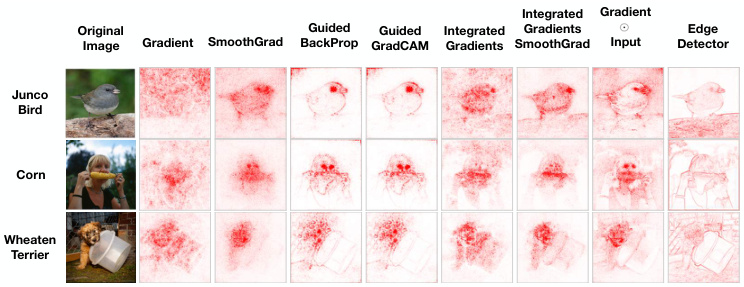
Integrated Gradient
Original Guided Guided Integrated Gradients Edge
Image Gradient SmoothGrad BackProp GradCAM Gradients SmoothGrad Input Detector
Junco
Bird
Corn
Wheaten
Terrier
Figure 1: Saliency maps for some common methods compared to an edge detector. Saliency masks for 3 different inputs for an Inception v3 model trained on ImageNet. We see that an edge detector produces outputs that are strikingly similar to the outputs of some saliency methods. In fact, edge detectors can also produce masks that highlight features which coincide with what appears to be relevant to a model’s class prediction. Interestingly, we find that the methods that are most similar to an edge detector, i.e., Guided Backprop and its variants, show minimal sensitivity to our randomization tests.
these methods are incapable of assisting with tasks that depend on the model, such as debugging the model, or tasks that depend on the relationships between inputs and outputs present in the data.
To illustrate the point, Figure 1 compares the output of standard saliency methods with those of an edge detector. The edge detector does not depend on model or training data, and yet produces results that bear visual similarity with saliency maps. This goes to show that visual inspection is a poor guide in judging whether an explanation is sensitive to the underlying model and data.
Our methodology derives from the idea of a statistical randomization test, comparing the natural experiment with an artificially randomized experiment. We focus on two instantiations of our general framework: a model parameter randomization test , and a data randomization test .
The model parameter randomization test compares the output of a saliency method on a trained model with the output of the saliency method on a randomly initialized untrained network of the same architecture. If the saliency method depends on the learned parameters of the model, we should expect its output to differ substantially between the two cases. Should the outputs be similar, however, we can infer that the saliency map is insensitive to properties of the model, in this case, the model parameters. In particular, the output of the saliency map would not be helpful for tasks such as model debugging that inevitably depend on the model.
The data randomization test compares a given saliency method applied to a model trained on a labeled data set with the method applied to the same model architecture but trained on a copy of the data set in which we randomly permuted all labels. If a saliency method depends on the labeling of the data, we should again expect its outputs to differ significantly in the two cases. An insensitivity to the permuted labels, however, reveals that the method does not depend on the relationship between instances (e.g. images) and labels that exists in the original data.
Speaking more broadly, any explanation method admits a set of invariances , i.e., transformations of data and model that do not change the output of the method. If we discover an invariance that is incompatible with the requirements of the task at hand, we can safely reject the method. As such, our tests can be thought of as sanity checks to perform before deploying a method in practice.
Our contributions
-
We propose two concrete, easy to implement tests for assessing the scope and quality of explanation methods: the model parameter randomization test, and the data randomization test. Both tests applies broadly to explanation methods.
-
We conduct extensive experiments with several explanation methods across data sets and model architectures, and find, consistently, that some of the methods tested are independent of both the model parameters and the labeling of the data that the model was trained on.
-
Of the methods tested, Gradients & GradCAM pass the sanity checks, while Guided BackProp & Guided GradCAM are invariant to higher layer parameters; hence, fail.
-
Consequently, our findings imply that the saliency methods that fail our proposed tests are incapable of supporting tasks that require explanations that are faithful to the model or the data generating process.
-
We interpret our findings through a series of analyses of linear models and a simple 1-layer convolutional sum-pooling architecture, as well as a comparison with edge detectors.
2 Methods and Related Work
In our formal setup, an input is a vector x ∈ Rd . A model describes a function S : Rd → RC , where C is the number of classes in the classification problem. An explanation method provides an explanation map E : Rd → Rd that maps inputs to objects of the same shape.
We now briefly describe some of the explanation methods we examine. The supplementary materials contain an in-depth overview of these methods. Our goal is not to exhaustively evaluate all prior explanation methods, but rather to highlight how our methods apply to several cases of interest.
The gradient explanation for an input x is E grad( x ) =∂S ∂x[22, 23, 8].The gradient quantifies how much a change in each input dimension would a change the predictions S ( x ) in a small neighborhood around the input.
Gradient ⊙ Input. Another form of explanation is the element-wise product of the input and the gradient, denoted x ⊙∂S ∂x, which can address “gradient saturation”, and reduce visual diffusion [13].
Integrated Gradients (IG) also addresses gradient saturation by summing over scaled versions of ∂S ( x ¯+ α ( x−x ¯)) the input [14]. IG for an input x is defined as E IG( x ) = ( x − x ¯) × �01 ∂x dα, where x ¯ is a “baseline input” that represents the absence of a feature in the original input x .
Guided Backpropagation (GBP) [9] builds on the “DeConvNet” explanation method [10] and corresponds to the gradient explanation where negative gradient entries are set to zero while backpropagating through a ReLU unit.
Guided GradCAM. Introduced by Selvaraju et al. [19], GradCAM explanations correspond to the gradient of the class score (logit) with respect to the feature map of the last convolutional unit of a DNN. For pixel level granularity GradCAM, can be combined with Guided Backpropagation through an element-wise product.
SmoothGrad (SG) [16] seeks to alleviate noise and visual diffusion [14, 13] for saliency maps by averaging over explanations of noisy copies of an input. For a given explanation map E, SmoothGrad is defined as E sg( x ) = N1 � Ni =1E(x+gi)_,where noise vectorsgi∼N(0, σ_2) are drawn i.i.d. from a normal distribution.
2.1 Related Work
Other Methods & Similarities. Aside gradient-based approaches, other methods ‘learn’ an explanation per sample for a model [20, 17, 12, 15, 11, 21]. More recently, Ancona et al. [24] showed that for ReLU networks (with zero baseline and no biases) the ϵ -LRP and DeepLift (Rescale) explanation methods are equivalent to the input ⊙ gradient. Similarly, Lundberg and Lee [18] proposed SHAP explanations which approximate the shapley value and unify several existing methods.
Fragility. Ghorbani et al. [25] and Kindermans et al. [26] both present attacks against saliency methods; showing that it is possible to manipulate derived explanations in unintended ways. Nie et al. [27] theoretically assessed backpropagation based methods and found that Guided BackProp and DeconvNet, under certain conditions, are invariant to network reparamaterizations, particularly random Gaussian initialization. Specifically, they show that Guided BackProp and DeconvNet both seem to be performing partial input recovery. Our findings are similar for Guided BackProp and its variants. Further, our work differs in that we propose actionable sanity checks for assessing explanation approaches. Along similar lines, Mahendran and Vedaldi [28] also showed that some backpropagation-based saliency methods can often lack neuron discriminativity.
Current assessment methods. Both Samek et al. [29] and Montavon et al. [30] proposed an input perturbation procedure for assessing the quality of saliency methods. Dabkowski and Gal [17] proposed an entropy based metric to quantify the amount of relevant information an explanation mask captures. Performance of a saliency map on an object localization task has also been used for assessing saliency methods. Montavon et al. [30] discuss explanation continuity and selectivity as measures of assessment.
Randomization. Our label randomization test was inspired by the work of Zhang et al. [31], although we use the test for an entirely different purpose.
2.2 Visualization & Similarity Metrics
We discuss our visualization approach and overview the set of metrics used in assessing similarity between two explanations.
Visualization. We visualize saliency maps in two ways. In the first case, absolute-value (ABS), we take absolute values of a normalized map. For the second case, diverging visualization, we leave the map as is, and use different colors to show positive and negative importance.
Similarity Metrics. For quantitative comparison, we rely on the following metrics: Spearman rank correlation with absolute value (absolute value), Spearman rank correlation without absolute value (diverging), the structural similarity index (SSIM), and the Pearson correlation of the histogram of gradients (HOGs) derived from two maps. We compute the SSIM and HOGs similarity metric on ImageNet examples without absolute values4 . SSIM and Pearson correlation of HOGs have been used in literature to remove duplicate images and quantify image similarity. Ultimately, quantifying human visual perception is still an active area of research.
3 Model Parameter Randomization Test
The parameter settings of a model encode what the model has learned from the data during training. In particular, model parameters have a strong effect on test performance of the model. Consequently, for a saliency method to be useful for debugging a model, it ought to be sensitive to model parameters.
As an illustrative example, consider a linear function of the form f ( x ) = w 1 x 1 + w 2 x 2 with input x ∈ R2 . A gradient-based explanation for the model’s behavior for input x is given by the parameter values ( w 1 , w 2), which correspond to the sensitivity of the function to each of the coordinates. Changes in the model parameters therefore change the explanation.
Our proposed model parameter randomization test assesses an explanation method’s sensitivity to model parameters. We conduct two kinds of randomization. First we randomly re-initialize all weights of the model both completely and in a cascading fashion. Second, we independently randomize a single layer at a time while keeping all others fixed. In both cases, we compare the resulting explanation from a network with random weights to the one obtained with the model’s original weights.
3.1 Cascading Randomization
Overview. In the cascading randomization, we randomize the weights of a model starting from the top layer, successively, all the way to the bottom layer. This procedure destroys the learned weights from the top layers to the bottom ones. Figure 2 shows masks, for several saliency methods, for an example input for the cascading randomization on an Inception v3 model trained on ImageNet. In Figure 4, we show the two Spearman (absolute value and no-absolute value) metrics across different data sets and architectures. Finally, in Figure 5, we show the SSIM and HOGs similarity metrics.
The gradient shows sensitivity while Guided Backprop is invariant to higher layer weights. We find that the gradient map is, indeed, sensitive to model parameter randomization. Similarly, GradCAM is sensitive to model weights if the randomization is downstream of the last convolutional layer. However, Guided Backprop (along with Guided GradCAM) is invariant to higher layer weights.
4We refer readers to the appendix for a discussion on calibration of these metrics.
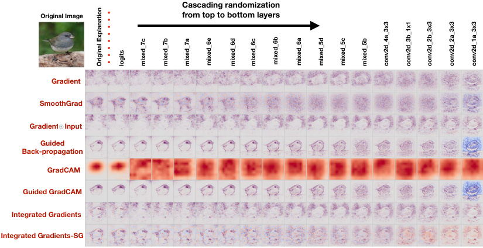
Cascading randomization
Original Image from top to bottom layers
Gradient
SmoothGrad
Gradient Input
Guided
Back-propagation
GradCAM
Guided Grad CA M
Integrated Gradients
Integrated Gradients-SG
Original Explanation logits mixe d _7c mixe d _7b mixe d _7a mixe d _6e mixe d _6d mixe d _6c mix ed _6b mixe d _6a mixe d _5d mixe d _5c mixe d _5b 2 d_4a_3x3conv 2 d_3b_1x1conv 2 d_2b_3x3conv 2 d_2a_3x3conv 2 d_1a_3x3conv
Figure 2: Cascading randomization on Inception v3 (ImageNet). Figure shows the original explanations (first column) for the Junco bird as well as the label for each explanation type. Progression from left to right indicates complete randomization of network weights (and other trainable variables) up to that ‘block’ inclusive. We show images for 17 blocks of randomization. Coordinate (Gradient, mixed_7b) shows the gradient explanation for the network in which the top layers starting from Logits up to mixed_7b have been reinitialized. The last column corresponds to a network with completely reinitialized weights. See Appendix for more examples.
Masks derived from Guided Backprop remain visually and quantitatively similar to masks of a trained model until lower layer weights (those closest to the input) are randomized.5
The danger of the visual assessment. On visual inspection, we find that gradient ⊙ input and integrated gradients show visual similarity to the original mask. In fact, from Figure 2, it is still possible to make out the structure of the bird even after multiple blocks of randomization. This visual similarity is reflected in the SSIM comparison (Figure 5), and the rank correlation with absolute value (Figure 4-Top). However, re-initialization disrupts the sign of the map, so that the spearman rank correlation without absolute values goes to zero (Figure 4-Bottom) almost as soon as the top layers are randomized. The observed visual perception versus ranking dichotomy indicates that naive visual inspection of the masks, in this setting, does not distinguish networks of similar structure but widely differing parameters. We explain the source of this phenomenon in our discussion section.
3.2 Independent Randomization
Overview. As a different form of the model parameter randomization test, we now conduct an independent layer-by-layer randomization with the goal of isolating the dependence of the explanations by layer. This approach allows us to exhaustively assess the dependence of saliency masks on lower versus higher layer weights. More concretely, for each layer, we fix the weights of other layers to their original values, and randomize one layer at a time.
Results. Figure 3 shows the evolution of different masks as each layer of Inception v3 is independently randomized. We observe a correspondence between the results from the cascading and independent layer randomization experiments: Guided Backprop (along with Guided GradCAM) show invariance to higher layer weights. However, once the lower layer convolutional weights are randomized, the Guided Backprop masks changes, although the resulting mask is still dominated by the input structure.
5A previous version of this work noted that Guided Backprop was entirely invariant; however, this is not this case.
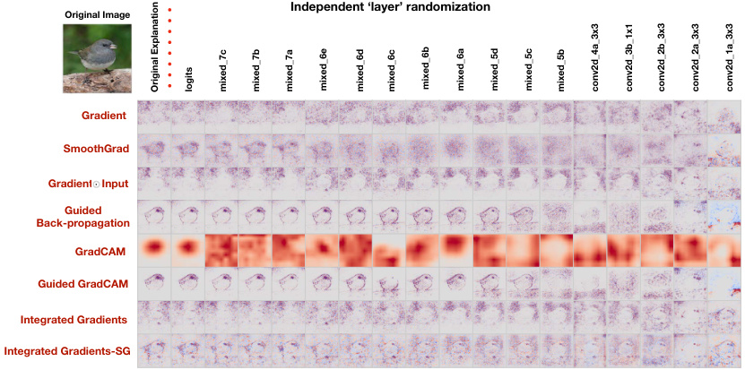
Independent ‘layer’ randomization
Original Image
Gradient
SmoothGrad
Gradient I n put
Guided
Back-propagation
GradCAM
Guided GradC A M
Integrated Gradients
Integrated Gradients-SG
Original Explanation logits mixe d_ 7c mixe d_ 7b mixe d_ 7a mixe d 6e mixe d 6d mixe d_ 6c mix ed _6b mixe d _6a mixe d _5d mixe d 5c mixe d 5b 2d _4a_3x3conv 2d _3b_1x1conv 2d _2b_3x3conv 2d _2a_3x3conv 2d _1a_3x3conv
Figure 3: Independent randomization on Inception v3 (ImageNet). Similar to Figure 2, however each ‘layer’/‘block’ is randomized independently, i.e., the rest of the weights are kept at the pre-trained values, while only each layer/block is randomized. Masks derived from these partially randomized networks are shown here. We observe, again, that Guided Backprop is sensitive to only the lower layer weights.
4 Data Randomization Test
The feasibility of accurate prediction hinges on the relationship between instances (e.g., images) and labels encoded by the data. If we artificially break this relationship by randomizing the labels, no predictive model can do better than random guessing. Our data randomization test evaluates the sensitivity of an explanation method to the relationship between instances and labels. An explanation method insensitive to randomizing labels cannot possibly explain mechanisms that depend on the relationship between instances and labels present in the data generating process. For example, if an explanation did not change after we randomly assigned diagnoses to CT scans, then evidently it did not explain anything about the relationship between a CT scan and the correct diagnosis in the first place (see [32] for an application of Guided BackProp as part of a pipepline for shadow detection in 2D Ultrasound).
In our data randomization test, we permute the training labels and train a model on the randomized training data. A model achieving high training accuracy on the randomized training data is forced to memorize the randomized labels without being able to exploit the original structure in the data. As it turns out, state-of-the art deep neural networks can easily fit random labels as was shown in Zhang et al. [31].
In our experiments, we permute the training labels for each model and data set pair, and train the model to greater than 95% training set accuracy. Note that the test accuracy is never better than randomly guessing a label (up to sampling error). For each resulting model, we then compute explanations on the same test bed of inputs for a model trained with true labels and the corresponding model trained on randomly permuted labels.
Gradient is sensitive. We find, again, that gradients, and its smoothgrad variant, undergo substantial changes. We also observe that GradCAM masks undergo changes that result in masks with disconnected patches.
Sole reliance on the visual inspection can be misleading. For Guided BackProp, we observe a visual change; however, we find that the masks still highlight portions of the input that would seem plausible, given correspondence with the input, on naive visual inspection. For example, from the diverging masks (Figure 6-Right), we see that the Guided BackProp mask still assigns positive relevance across most of the digit for the network trained on random labels.
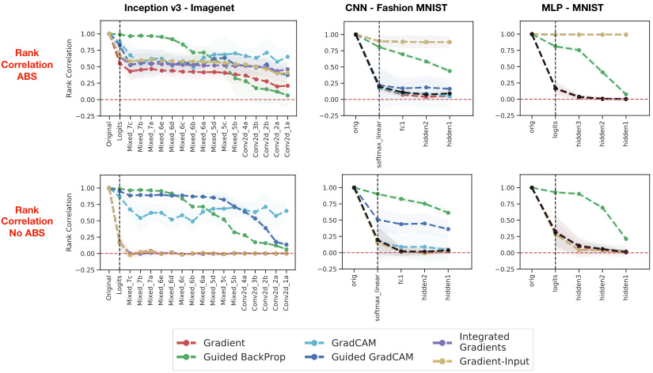
Inception v3 - Imagenet CNN - Fashion MNIST MLP - MNIST
Rank
Correlation
ABS
Rank
Correlation
No ABS
Figure 4: Cascading Randomization. Successive re-initialization of weights starting from top layers for Inception v3 on ImageNet, CNN on Fashion MNIST, and MLP on MNIST. In all plots, y axis is the rank correlation between original explanation and the randomized explanation derived for randomization up to that layer/block, while the x axis corresponds to the layers/blocks of the DNN starting from the output layer. The black dashed line indicates where successive randomization of the network begins, which is at the top layer. Top : Spearman Rank correlation with absolute values, Bottom : Spearman Rank correlation without absolute values.
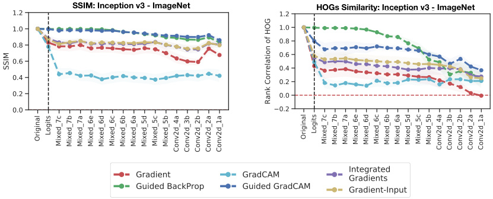
SSIM: Inception v3 - ImageNet HOGs Similarity: Inception v3 - ImageNet
Figure 5: Cascading Randomization. Figure showing SSIM and HOGs similarity between original input masks and the masks generated as the Inception v3 is randomized in a cascading manner.
For gradient ⊙ input and integrated gradients, we also observe visual changes in the masks obtained, particularly, in the sign of the attributions. Despite this, the input structure is still clearly prevalent in the masks. The effect observed is particularly prominent for sparse inputs like MNIST where most of the input is zero; however, we observe similar effects for Fashion MNIST (see Appendix), which is less sparse. With visual inspection alone, it is not inconceivable that an analyst could confuse the integrated gradient and gradient ⊙ input masks derived from a network trained on random labels as legitimate. We clarify these findings and address implications in the discussion section.
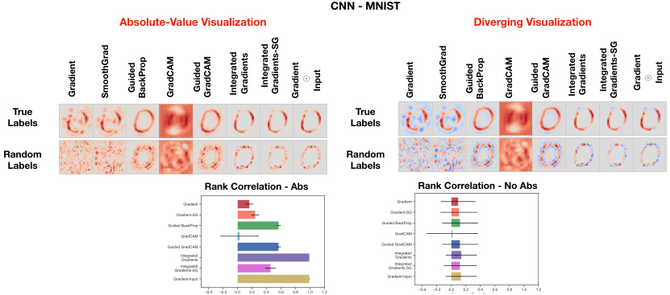
CNN - MNIST
Absolute-Value Visualization Diverging Visualization
True True
Labels Labels
Random Random
Labels Labels
Rank Correlation - Abs Rank Correlation - No Abs
Gradient SmoothGrad Guided BackProp GradCAM Guided GradCAM Integrated Gradients Integrated Gradients-SG Gradient Input Gradient SmoothGrad Guided BackProp GradCAM Guided GradCAM Integrated Gradients Integrated Gradients-SG Gradient Input
Figure 6: Explanation for a true model vs. model trained on random labels. Top Left : Absolutevalue visualization of masks for digit 0 from the MNIST test set for a CNN. Top Right : Saliency masks for digit 0 from the MNIST test set for a CNN shown in diverging color. Bottom Left : Spearman rank correlation (with absolute values) bar graph for saliency methods. We compare the similarity of explanations derived from a model trained on random labels, and one trained on real labels. Bottom Right : Spearman rank correlation (without absolute values) bar graph for saliency methods for MLP. See appendix for corresponding figures for CNN, and MLP on Fashion MNIST.
5 Discussion
We now take a step back to interpret our findings. First, we discuss the influence of the model architecture on explanations derived from NNs. Second, we consider methods that approximate an element-wise producet of the input and the gradient, as several local explanations do [33, 18]. We show, empirically, that the input “structure” dominates the gradient, especially for sparse inputs. Third, we explain the observed behavior of the gradient explanation with an appeal to linear models. We then consider a single 1-layer convolution with sum-pooling architecture, and show that saliency explanations for this model mostly capture edges. Finally, we return to the edge detector and make comparisons between methods that fail our sanity checks and an edge detector.
5.1 The role of model architecture as a prior
The architecture of a deep neural network has an important effect on the representation derived from the network. A number of results speak to the strength of randomly initialized models as classification priors [34, 35]. Moreover, randomly initialized networks trained on a single input can perform tasks like denoising, super-resolution, and in-painting [36] without additional training data. These prior works speak to the fact that randomly initialized networks correspond to non-trivial representations. Explanations that do not depend on model parameters or training data might still depend on the model architecture and thus provide some useful information about the prior incorporated in the model architecture. However, in this case, the explanation method should only be used for tasks where we believe that knowledge of the model architecture on its own is sufficient for giving useful explanations.
5.2 Element-wise input-gradient products
A number of methods, e.g., ϵ -LRP, DeepLift, and integrated gradients, approximate the element-wise product of the input and the gradient (on a piecewise linear function like ReLU). To gain further insight into our findings, we can look at what happens to the input-gradient product E ( x ) = x⊙∂S ∂x_,_if the input is kept fixed, but the gradient is randomized. To do so, we conduct the following experiment. For an input x , sample two normal random vectors u, v (we consider both the truncated normal and uniform distributions) and consider the element-wise product of x with u and v, respectively, i.e., x ⊙ u , and x ⊙ v . We then look at the similarity, for all the metrics considered, between x ⊙ u and
x ⊙ v as noise increases. We conduct this experiment on Fashion MNIST and ImageNet samples. We observe that the input does indeed dominate the product (see Figure 19 in Appendix). We also observe that the input dominance persists even as the noisy gradient vectors change drastically. This experiment indicates that methods that approximate the “input-times-gradient” mostly return the input, in cases where the gradients look visually noisy as they tend to do.
5.3 Analysis for simple models
To better understand our findings, we analyze the output of the saliency methods tested on two simple models: a linear model and a 1-layer sum pooling convolutional network. We find that the output of the saliency methods, on a linear model, returns a coefficient that intuitively measures the sensitivity of the model with respect to that variable. However, these methods applied to a random convolution seem to result in visual artifacts that are akin to an edge detector.
Linear Model. Consider a linear model f : Rd → R defined as f ( x ) = w · x where w ∈ Rd are the model weights. For gradients we have E grad( x ) =∂( ∂xw·x) = w. Similarly for SmoothGrad we have E sg( x ) = w (the gradient is independent of the input, so averaging gradients over noisy inputs yields the same model weight). Integrated Gradients reduces to “gradient ⊙ input” for this case:
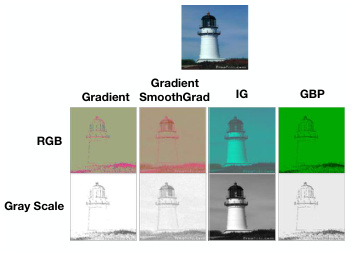
Gradient
Gradient SmoothGrad IG GBP
RGB
Gray Scale
Figure 7: Explanations derived for the 1-layer Sum-Pooling Convolution architecture. We show gradient, SmoothGrad, Integrated Gradients and Guided BackProp explanations.
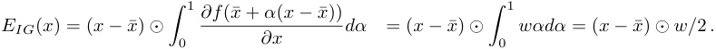
Consequently, we see that the application of the basic gradient method to a linear model will pass our sanity check. Gradients on a random model will return an image of white noise, while integrated gradients will return a noisy version of the input image. We did not consider Guided Backprop and GradCAM here because both methods are not defined for the linear model considered above.
1 Layer Sum-Pool Conv Model. We now show that the application of these same methods to a 1-layer convolutional network may result in visual artifacts that can be misleading unless further analysis is done. Consider a single-layer convolutional network applied to a grey-scale image x ∈ Rn×n . Let w ∈ R3_×_3 denote the 3 × 3 convolutional filter, indexed as wij for i, j ∈{− 1 , 0 , 1 } . We denote by w ∗ x ∈ Rn×n the output of the convolution operation on the image x . Then the output of this network can be written as l ( x ) = � n � n σ ( w ∗ x ) ij , where σ is the ReLU non-linearity i =1 j =1
applied point-wise. In particular, this network applies a single 3x3 convolutional filter to the input image, then applies a ReLU non-linearity and finally sum-pools over the entire convolutional layer for the output. This is a similar architecture to the one considered in [34]. As shown in Figure 7, we see that different saliency methods do act like edge detectors. This suggests that the convolutional structure of the network is responsible for the edge detecting behavior of some of these saliency methods.
To understand why saliency methods applied to this simple architecture visually appear to be edge detectors, we consider the closed form of the gradient ∂x∂ijl(x).Letaij=1{(w ∗x)_ij≥0}_indicate the activation pattern of the ReLU units in the convolutional layer. Then for i, j ∈ [2 , n − 1] we have
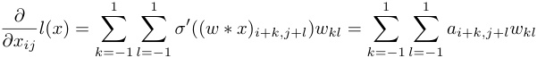
(Recall that σ′ ( x ) = 0 if x < 0 and 1 otherwise). This implies that the 3 × 3 activation pattern local to pixel xij uniquely determines ∂x∂ij.Itisnowclearwhyedgeswillbevisibleintheproduced
saliency mask — regions in the image corresponding to an “edge” will have a distinct activation pattern from surrounding pixels. In contrast, pixel regions of the image which are more uniform will all have the same activation pattern, and thus the same value of ∂x∂ijl(x).Perhaps a similar principle applies for stacked convolutional layers.
5.4 The case of edge detectors.
An edge detector , roughly speaking, is a classical tool to highlight sharp transitions in an image. Notably, edge detectors are typically untrained and do not depend on any predictive model. They are solely a function of the given input image. As some of the saliency methods we saw, edge detection is invariant under model and data transformations.
In Figure 1 we saw that edge detectors produce images that are strikingly similar to the outputs of some saliency methods. In fact, edge detectors can also produce pictures that highlight features which coincide with what appears to be relevant to a model’s class prediction. However, here the human observer is at risk of confirmation bias when interpreting the highlighted edges as an explanation of the class prediction. In Figure 37 (Appendix), we show a qualitative comparison of saliency maps of an input image with the same input image multiplied element-wise by the output of an edge detector. The result indeed looks strikingly similar, illustrating that saliency methods mostly use the edges of the image.
While edge detection is a fundamental and useful image processing technique, it is typically not thought of as an explanation method, simply because it involves no model or training data. In light of our findings, it is not unreasonable to interpret some saliency methods as implicitly implementing unsupervised image processing techniques, akin to edge detection, segmentation, or denoising. To differentiate such methods from model-sensitive explanations, visual inspection is insufficient.
6 Conclusion and future work
The goal of our experimental method is to give researchers guidance in assessing the scope of model explanation methods. We envision these methods to serve as sanity checks in the design of new model explanations. Our results show that visual inspection of explanations alone can favor methods that may provide compelling pictures, but lack sensitivity to the model and the data generating process.
Invariances in explanation methods give a concrete way to rule out the adequacy of the method for certain tasks. We primarily focused on invariance under model randomization, and label randomization. Many other transformations are worth investigating and can shed light on various methods we did and did not evaluate. Along these lines, we hope that our paper is a stepping stone towards a more rigorous evaluation of new explanation methods, rather than a verdict on existing methods.
Acknowledgments
We thank the Google PAIR team for open source implementation of the methods used in this work. We thank Martin Wattenberg and other members of the Google Brain team for critical feedback and helpful discussions that helped improved the work. Lastly, we thank anonymous reviewers for feedback that helped improve the manuscript. We are also grateful to Leon Sixt for pointing out a bug in our Guided Backprop experiments in an earlier version of this work.
References
-
[1] Alfredo Vellido, José David Martín-Guerrero, and Paulo JG Lisboa. Making machine learning models interpretable. In ESANN , volume 12, pages 163–172. Citeseer, 2012.
-
[2] Finale Doshi-Velez, Mason Kortz, Ryan Budish, Chris Bavitz, Sam Gershman, David O’Brien, Stuart Schieber, James Waldo, David Weinberger, and Alexandra Wood. Accountability of ai under the law: The role of explanation. arXiv preprint arXiv:1711.01134 , 2017.
-
[3] Bryce Goodman and Seth Flaxman. European union regulations on algorithmic decision-making and a" right to explanation". arXiv preprint arXiv:1606.08813 , 2016.
-
[4] Jorge Casillas, Oscar Cordón, Francisco Herrera Triguero, and Luis Magdalena. Interpretability issues in fuzzy modeling , volume 128. Springer, 2013.
-
[5] Gabriel Cadamuro, Ran Gilad-Bachrach, and Xiaojin Zhu. Debugging machine learning models. In ICML Workshop on Reliable Machine Learning in the Wild , 2016.
-
[6] Himabindu Lakkaraju, Ece Kamar, Rich Caruana, and Jure Leskovec. Interpretable & explorable approximations of black box models. arXiv preprint arXiv:1707.01154 , 2017.
-
[7] Fulton Wang and Cynthia Rudin. Causal falling rule lists. arXiv preprint arXiv:1510.05189 , 2015.
-
[8] Karen Simonyan, Andrea Vedaldi, and Andrew Zisserman. Deep inside convolutional networks: Visualising image classification models and saliency maps. arXiv preprint arXiv:1312.6034 , 2013.
-
[9] Jost Tobias Springenberg, Alexey Dosovitskiy, Thomas Brox, and Martin Riedmiller. Striving for simplicity: The all convolutional net. arXiv preprint arXiv:1412.6806 , 2014.
-
[10] Matthew D Zeiler and Rob Fergus. Visualizing and understanding convolutional networks. In European conference on computer vision , pages 818–833. Springer, 2014.
-
[11] Maximilian Alber Klaus-Robert Müller Dumitru Erhan Been Kim Sven Dähne Pieter-Jan Kindermans, Kristof T. Schütt. Learning how to explain neural networks: Patternnet and patternattribution. International Conference on Learning Representations , 2018. URL
https://openreview.net/forum?id= Hkn7CBaTW. -
[12] Luisa M Zintgraf, Taco S Cohen, Tameem Adel, and Max Welling. Visualizing deep neural network decisions: Prediction difference analysis. arXiv preprint arXiv:1702.04595 , 2017.
-
[13] Avanti Shrikumar, Peyton Greenside, Anna Shcherbina, and Anshul Kundaje. Not just a black box: Learning important features through propagating activation differences. arXiv preprint arXiv:1605.01713 , 2016.
-
[14] Mukund Sundararajan, Ankur Taly, and Qiqi Yan. Axiomatic attribution for deep networks. arXiv preprint arXiv:1703.01365 , 2017.
-
[15] Marco Tulio Ribeiro, Sameer Singh, and Carlos Guestrin. Why should i trust you?: Explaining the predictions of any classifier. In Proceedings of the 22nd ACM SIGKDD International Conference on Knowledge Discovery and Data Mining , pages 1135–1144. ACM, 2016.
-
[16] Daniel Smilkov, Nikhil Thorat, Been Kim, Fernanda Viégas, and Martin Wattenberg. Smoothgrad: removing noise by adding noise. arXiv preprint arXiv:1706.03825 , 2017.
-
[17] Piotr Dabkowski and Yarin Gal. Real time image saliency for black box classifiers. In Advances in Neural Information Processing Systems , pages 6970–6979, 2017.
-
[18] Scott M Lundberg and Su-In Lee. A unified approach to interpreting model predictions. In Advances in Neural Information Processing Systems , pages 4768–4777, 2017.
-
[19] Ramprasaath R Selvaraju, Abhishek Das, Ramakrishna Vedantam, Michael Cogswell, Devi Parikh, and Dhruv Batra. Grad-cam: Why did you say that? arXiv preprint arXiv:1611.07450 , 2016.
-
[20] Ruth C Fong and Andrea Vedaldi. Interpretable explanations of black boxes by meaningful perturbation. arXiv preprint arXiv:1704.03296 , 2017.
-
[21] Jianbo Chen, Le Song, Martin Wainwright, and Michael Jordan. Learning to explain: An informationtheoretic perspective on model interpretation. In Jennifer Dy and Andreas Krause, editors, Proceedings of the 35th International Conference on Machine Learning , volume 80 of Proceedings of Machine Learning Research , pages 883–892, Stockholmsmässan, Stockholm Sweden, 10–15 Jul 2018. PMLR. URL
http://proceedings.mlr.press/v80/chen18j.html. -
[22] David Baehrens, Timon Schroeter, Stefan Harmeling, Motoaki Kawanabe, Katja Hansen, and Klaus-Robert MÞller. How to explain individual classification decisions. Journal of Machine Learning Research , 11 (Jun):1803–1831, 2010.
-
[23] Dumitru Erhan, Yoshua Bengio, Aaron Courville, and Pascal Vincent. Visualizing higher-layer features of a deep network. University of Montreal , 1341(3):1, 2009.
-
[24] Marco Ancona, Enea Ceolini, Cengiz Öztireli, and Markus Gross. A unified view of gradient-based attribution methods for deep neural networks. arXiv preprint arXiv:1711.06104 , 2017.
-
[25] Amirata Ghorbani, Abubakar Abid, and James Zou. Interpretation of neural networks is fragile. arXiv preprint arXiv:1710.10547 , 2017.
-
[26] Pieter-Jan Kindermans, Sara Hooker, Julius Adebayo, Maximilian Alber, Kristof T Schütt, Sven Dähne, Dumitru Erhan, and Been Kim. The (un) reliability of saliency methods. arXiv preprint arXiv:1711.00867 , 2017.
-
[27] Weili Nie, Yang Zhang, and Ankit Patel. A theoretical explanation for perplexing behaviors of backpropagation-based visualizations. In ICML , 2018.
-
[28] Aravindh Mahendran and Andrea Vedaldi. Salient deconvolutional networks. In European Conference on Computer Vision , pages 120–135. Springer, 2016.
-
[29] Wojciech Samek, Alexander Binder, Grégoire Montavon, Sebastian Lapuschkin, and Klaus-Robert Müller. Evaluating the visualization of what a deep neural network has learned. IEEE transactions on neural networks and learning systems , 28(11):2660–2673, 2017.
-
[30] Grégoire Montavon, Wojciech Samek, and Klaus-Robert Müller. Methods for interpreting and understanding deep neural networks. Digital Signal Processing , 2017.
-
[31] Chiyuan Zhang, Samy Bengio, Moritz Hardt, Benjamin Recht, and Oriol Vinyals. Understanding deep learning requires rethinking generalization. In In Proc. 5 th ICLR , 2017.
-
[32] Qingjie Meng, Christian Baumgartner, Matthew Sinclair, James Housden, Martin Rajchl, Alberto Gomez, Benjamin Hou, Nicolas Toussaint, Jeremy Tan, Jacqueline Matthew, et al. Automatic shadow detection in 2d ultrasound. 2018.
-
[33] Marco Ancona, Enea Ceolini, Cengiz Öztireli, and Markus Gross. Towards better understanding of gradient-based attribution methods for deep neural networks. In In Proc. 6 th ICLR , 2018.
-
[34] Andrew M Saxe, Pang Wei Koh, Zhenghao Chen, Maneesh Bhand, Bipin Suresh, and Andrew Y Ng. On random weights and unsupervised feature learning. In ICML , pages 1089–1096, 2011.
-
[35] Guillaume Alain and Yoshua Bengio. Understanding intermediate layers using linear classifier probes. arXiv preprint arXiv:1610.01644 , 2016.
-
[36] Dmitry Ulyanov, Andrea Vedaldi, and Victor Lempitsky. Deep image prior. arXiv preprint arXiv:1711.10925 , 2017.
-
[37] Julius Adebayo, Justin Gilmer, Ian Goodfellow, and Been Kim. Local explanation methods for deep neural networks lack sensitivity to parameter values. 2018.
-
[38] Junghoon Seo, Jeongyeol Choe, Jamyoung Koo, Seunghyeon Jeon, Beomsu Kim, and Taegyun Jeon. Noise-adding methods of saliency map as series of higher order partial derivative. arXiv preprint arXiv:1806.03000 , 2018.
-
[39] Christian Szegedy, Vincent Vanhoucke, Sergey Ioffe, Jon Shlens, and Zbigniew Wojna. Rethinking the inception architecture for computer vision. In Proceedings of the IEEE Conference on Computer Vision and Pattern Recognition , pages 2818–2826, 2016.
-
[40] Olga Russakovsky, Jia Deng, Hao Su, Jonathan Krause, Sanjeev Satheesh, Sean Ma, Zhiheng Huang, Andrej Karpathy, Aditya Khosla, Michael Bernstein, et al. Imagenet large scale visual recognition challenge. International Journal of Computer Vision , 115(3):211–252, 2015.
-
[41] Yann LeCun. The mnist database of handwritten digits. http://yann. lecun. com/exdb/mnist/ , 1998.
-
[42] Han Xiao, Kashif Rasul, and Roland Vollgraf. Fashion-mnist: a novel image dataset for benchmarking machine learning algorithms. arXiv preprint arXiv:1708.07747 , 2017.
-
[43] Christian Szegedy, Sergey Ioffe, Vincent Vanhoucke, and Alexander A Alemi. Inception-v4, inceptionresnet and the impact of residual connections on learning. In AAAI , volume 4, page 12, 2017.
Appendix
A Explanation Methods
We now provide additional overview of the different saliency methods that we assess in this work. As described in the main text, an input is a vector x ∈ Rd . A model describes a function S : Rd → RC , where C is the number of classes in the classification problem. An explanation method provides an explanation map E : Rd → Rd that maps inputs to objects of the same shape. Each dimension then correspond to the ‘relevance’ or ‘importance’ of that dimension to the final output, which is often a class-specific score as specified above.
A.1 Gradient with respect to input
This corresponds to the gradient of the scalar logit for a particular class wrt to the input.
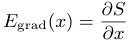
A.2 Gradient ⊙ Input
Gradient element-wise product with the input. Ancona et. al. show that this input gradient product is equivalent to DeepLift, and ϵ -LRP (other explanations methods), for a network with with only Relu(s) and no additive biases.
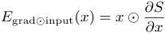
A.3 Guided Backpropagation (GBP)
GBP specifies a change in how to back-propagate gradienst for ReLus. Let {fl , f_l−_1 , ..., f0 } be the feature maps derived during the forward pass through a DNN, and {Rl , R_l−_1 , ..., R0 } be ‘intermediate representations’ obtained during the backward pass. Concretely, fl = relu ( f_l−_1 ) = max ( fl−1 , 0) , and Rl+1 = ∂f∂flout+1(for regular back-propagation). GBP aims to zero out negative gradients during computation of R. The mask is computed as:
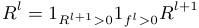
1 Rl +1 > 0 means keep only the positive gradients, and 1 f l> 0 means keep only the positive activations.
A.4 GradCAM and Guided GradCAM
Introduced by Selvaraju et al. [19], GradCAM explanations correspond to the gradient of the class score (logit) with respect to the feature map of the last convolutional unit of a DNN. For pixel level granularity GradCAM, can be combined with Guided Backpropagation through an element-wise product.
Following the exact notation by Selvaraju et al. [19], let Ak be the feature maps derived from the last convolutional layer of a DNN. Consequently, GradCAM is defined as follows: first, neuron importance weights are calculated, αck= Z 1 � i � j ∂A∂Sk kα ckAk).This ij,thentheGradCAMmaskcorrespondsto:ReLU(� corresponds to a global average pooling of the gradients followed by weighted linear combination to which a ReLU is applied. Now, the Guided GradCAM mask is then defined as:
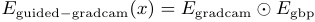
A.5 Integrated Gradients (IG)
IG is defined as:
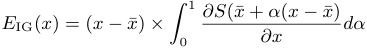
where x ¯ is the baseline input that represents the absence of a feature in the original sample xt . x ¯ is typically set to zero.
A.6 SmoothGrad
Given an explanation, E , from one of the methods previously discussed, a sample x , the SmoothGrad explanation, E sg, is defined as follows:
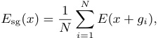
where noise vectors gi ∼N (0 , σ2 )) are drawn i.i.d. from a normal distribution.
A.7 VarGrad
Similar to SmoothGrad, and as referenced in [37] a variance analog of SmoothGrad can be defined as follows:
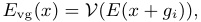
where noise vectors gi ∼N (0 , σ2 )) are drawn i.i.d. from a normal distribution, and V corresponds to the variance. In the visualizations presented here, explanations with VG correspond to the VarGrad equivalent of such masks. Seo et al. [38] theoretically analyze VarGrad showing that it is independent of the gradient, and captures higher order partial derivatives.
B DNN Architecture, Training, Randomization & Metrics
Experimental Details Data sets & Models. We perform our randomization tests on a variety of datasets and models as follows: an Inception v3 model [39] trained on the ImageNet classification dataset [40] for object recognition, a Convolutional Neural Network (CNN) trained on MNIST [41] and Fashion MNIST [42], and a multi-layer perceptron (MLP), also trained on MNIST and Fashion MNIST.
Randomization Tests We perform 2 types of randomizations. For the model parameter randomization tests, we re-initialized the parameters of each of the models with a truncated normal distribution. We replicated these randomization for a uniform distribution and obtain identical results. For the random labels test, we randomize, completely, the training labels for a each-model dataset pair (MNIST and Fashion MNIST) and then train the model to greater than 95 percent training set accuracy. As expected the performance of these models on the tests set is random.
Inception v3 trained on ImageNet. For Inception v3, we used a pre-trained network that is widely distributed with the tensorflow package available at: https://github.com/tensorflow/models/tree/ master/research/slim#Pretrained . This model has a 93 . 9 top-5 accuracy on the ImageNet test set. For the randomization tests, we re-initialized on a per-block basis. As noted in [43], each inception block consists of multiple filters of different sizes. In this case, we randomize all the the filter weights, biases, and batch-norm variables for each inception block. In total, this randomization occurs in 17 phases.
CNN on MNIST and Fashion MNIST. The CNN architecture is as follows: input - > conv (5x5, 32) - > pooling (2x2)- > conv (5x5, 64) - > pooling (2x2) - > fully connected (1024 units) - > softmax (10 units). We train the model with the ADAM optimizer for 20 thousand iterations. All non-linearities used are ReLU. We also apply weight decay (penalty 0 . 001) to the weights of the network. The final test set accuracy of this model is 99.2 percent. For model parameter randomization test, we reinitialize each layer successively or independently depending on the randomization experiment. The weight initialiazation scheme followed was a truncated normal distribution (mean: 0, std: 0.01). We also tried a uniform distribution as well, and found that our results still hold.
MLP trained on MNIST. The MLP architecture is as follows: input - > fully connected (2500 units) - > fully connected (1500 units) - > fully connected (500 units) - > fully connected (10 units). We also train this model with the ADAM optimizer for 20 thousand iterations. All non-linearities used are Relu. The final test set accuracy of this model is 98.7 percent. For randomization tests, we reinitialize each layer successively or independently depending on the randomization experiment.
Inception v4 trained on Skeletal Radiograms. We also analyzed an inception v4 model trained on skeletal radiograms obtained as part of the pediatric bone age challenge conducted by the radiological society of north America. This inception v4 model was trained retained the standard original parameters except it was trained with a mixed L1 and L2 loss. In our randomization test as indicated in figure 1, we reinitialize all weights, biases, and variables of the model.
Calibration for Similarity Metrics. As noted in the methods section, we measure the similarity of the saliency masks obtained using the following metrics: Spearman rank correlation with absolute value (absolute value), Spearman rank correlation without absolute value (diverging), the structural similarity index (SSIM), and the Pearson correlation of the histogram of gradients (HOGs) derived from two maps. The SSIM and HOGs metrics
are computed for ImageNet explanation masks. We do this because these metrics are suited to natural images, and to avoid the somewhat artificial structure of Fashion MNIST and MNIST images. We conduct two kinds of calibration exercises. First we measure, for each metric, the similarity between an explanation mask and a randomly sampled (Uniform or Gaussian) mask. Second, we measure, for each metric, the similarity between two randomly sampled explanation masks (Uniform or Gaussian). Together, these two tasks allow us to see if high values for a particular metric indeed correspond to meaningfully high values.
We use the skimage HOG function with a (16, 16) pixels per cell. Note that the input to the HOG function is 299 by 229 with the values normalized to [-1, +1]. We also used the skimage SSIM function with a window size of 5. We obtained the gradient saliency maps for 50 images in the ImageNet validation set. We then compare these under the two settings described above; we report the average across these 50 images as the following tuple: (Rank correlation with no absolute value, Rank correlation with absolute value, HOGs Metric, SSIM). The average similarity between the gradient mask and random Gaussian mask is: ( − 0 . 00049 , 0 . 00032 , − 0 . 0016 , 0 . 00027). We repeat this experiment for Integrated gradient and gradient ⊙ input and obtained: (0 . 00084 , 0 . 00059 , 0 . 0048 , 0 . 00018), and (0 . 00081 , 0 . 00099 , − 0 . 0024 , 0 . 00023). We now report results for the above metrics for similarity between two random masks. For uniform distribution [-1, 1], we obtain the following similarity: (0 . 00016 , − 0 . 0015 , 0 . 078 , 0 . 00076). For Gaussian masks with mean zero and unit variance that has been normalized to lie in the range [-1, 1], we obtain the following similarity metric: (0 . 00018 , 0 . 00043 , − 0 . 0013 , 0 . 00023).
C Additional Figures
We now present additional figures referenced in the main text.
| Cascading Randomization Guided BackProp InceptionV3 |
|---|
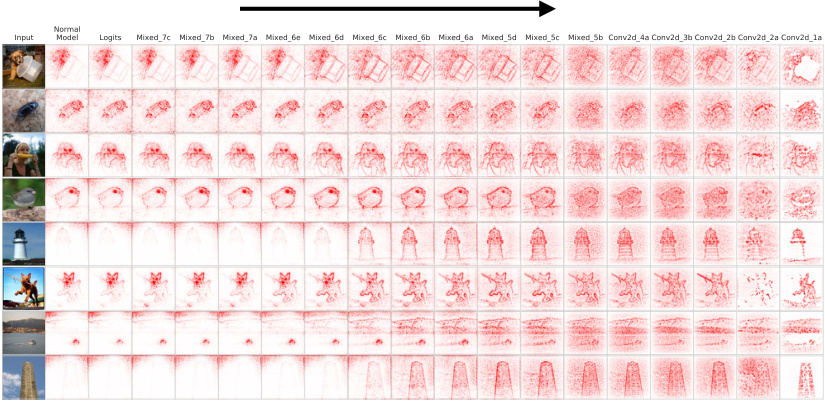
Figure 8: Cascading Randomization for several examples for Guided Backpropagation.
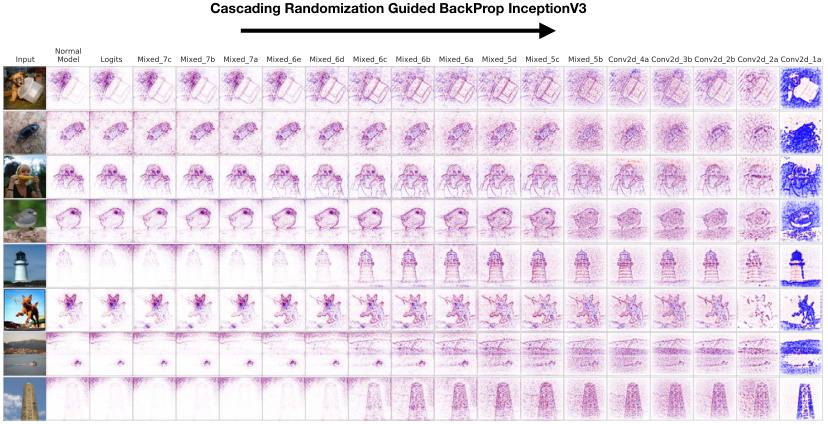
Cascading Randomization Guided BackProp InceptionV3
Figure 9: Cascading Randomization for several examples for Guided Backpropagation in a different visualization scheme.
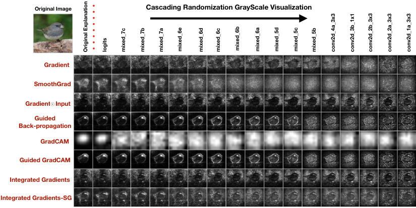
Original Image Cascading Randomization GrayScale Visualization
Gradient
SmoothGrad
Gradient Input
Guided
Back-propagation
GradCAM
Guided GradCAM
Integrated Gradients
Integrated Gradients-SG
Original Explanation logits mixed7c _ mixe d_ 7b mixe d_ 7a mixe d_ 6e mixe d 6d mixed6c _ mixe d 6b mixe d_ 6a mixe d_ 5d mixe d_ 5c mixe d_ 5b 2d _4a_3x3conv 2d _3b_1x1conv 2d _2b_3x3conv 2d _2a_3x3conv 2d _1a_3x3conv
Figure 10: Cascading Randomization on Inception V3 for bird example in Grayscale.
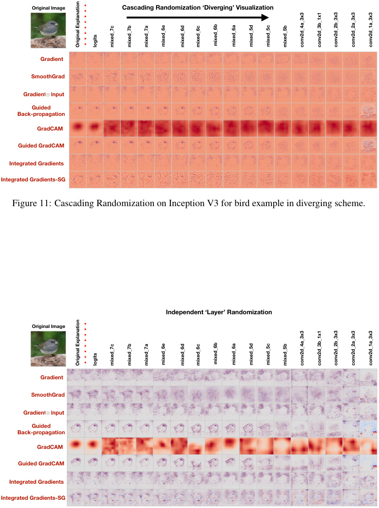
Original Image Cascading Randomization ‘Diverging’ Visualization
Gradient
SmoothGrad
Gradient I n put
Guided
Back-propagation
GradCAM
Guided GradC A M
Integrated Gradients
Integrated Gradients-SG
Figure 11: Cascading Randomization on Inception V3 for bird example in diverging scheme.
Independent ‘Layer’ Randomization
Original Image
Gradient
SmoothGrad
Gradient Input
Guided
Back-propagation
GradCAM
Guided Grad CA M
Integrated Gradients
Integrated Gradients-SG
Original Explanation logits mixe d_ 7c mixe d _7b mixe d _7a mixe d _6e mixe d 6d mixe d 6c mix ed _6b mixe d 6a mixe d 5d mixe d 5c mixe d 5b 2d 4a_3x3conv 2d 3b_1x1conv 2d 2b_3x3conv 2d 2a_3x3conv 2d 1a_3x3conv
Original Explanation logits mixe d 7c mixe d 7b mixe d 7a mixe d 6e mixe d 6d mixe d 6c mixe d 6b mixe d 6a mixe d 5d mixe d 5c mixe d 5b 2d _4a_3x3conv 2d _3b_1x1conv 2d _2b_3x3conv 2d _2a_3x3conv 2d _1a_3x3conv
Figure 12: Independent Randomization on Inception V3 for bird example.
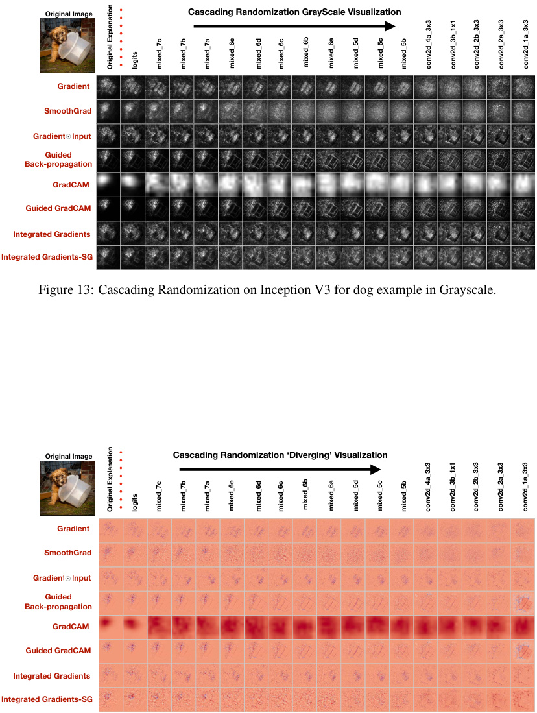
Original Image Cascading Randomization GrayScale Visualization
Gradient
SmoothGrad
Gradient I n put
Guided
Back-propagation
GradCAM
Guided GradC A M
Integrated Gradients
Integrated Gradients-SG
Figure 13: Cascading Randomization on Inception V3 for dog example in Grayscale.
Original Image Cascading Randomization ‘Diverging’ Visualization
Gradient
SmoothGrad
Gradient I np ut
Guided
Back-propagation
GradCAM
Guided GradC A M
Integrated Gradients
Integrated Gradients-SG
Original Explanation logits mixe d_ 7c mixe d_ 7b mixe d_ 7a mixe d 6e mixe d 6d mixe d_ 6c mixe d _6b mixe d 6a mixe d 5d mixe d 5c mixe d 5b 2d _4a_3x3conv 2d _3b_1x1conv 2d _2b_3x3conv 2d _2a_3x3conv 2d _1a_3x3conv
Original Explanation logits mixed_7c mixed_7b mixed_7a mixed_6e mixe d _6d mixe d _6c mix ed _6b mixe d _6a mixe d _5d mixe d _5c mixe d _5b 2 d_4a_3x3conv 2 d_3b_1x1conv 2 d_2b_3x3conv 2 d_2a_3x3conv 2 d_1a_3x3conv
Figure 14: Cascading Randomization on Inception V3 for dog example in diverging scheme.
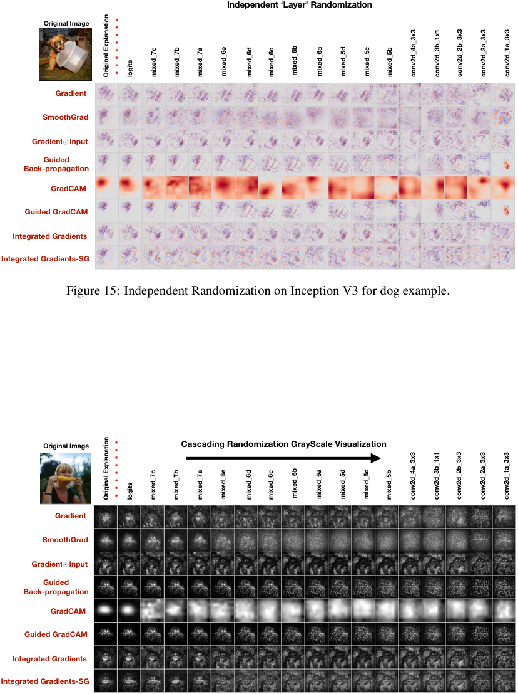
Independent ‘Layer’ Randomization
Original Image
Gradient
SmoothGrad
Gradient I np ut
Guided
Back-propagation
GradCAM
Guided GradC A M
Integrated Gradients
Integrated Gradients-SG
Figure 15: Independent Randomization on Inception V3 for dog example.
Original Image Cascading Randomization GrayScale Visualization
Gradient
SmoothGrad
Gradient I n put
Guided
Back-propagation
GradCAM
Guided GradC A M
Integrated Gradients
Integrated Gradients-SG
Original Explanation logits mixed_7c mixed_7b mixed_7a mixed_6e mixe d_ 6d mixe d_ 6c mix ed 6b mixe d 6a mixe d 5d mixe d 5c mixe d 5b 2d 4a_3x3conv 2d 3b_1x1conv 2d 2b_3x3conv 2d 2a_3x3conv 2d 1a_3x3conv
Original Explanation logits mixe d 7c mixe d 7b mixe d 7a mixe d 6e mixe d 6d mixe d 6c mixe d 6b mixe d 6a mixe d 5d mixe d 5c mixe d_ 5b 2d _4a_3x3conv 2d _3b_1x1conv 2d _2b_3x3conv 2d _2a_3x3conv 2d _1a_3x3conv
Figure 16: Cascading Randomization on Inception V3 for corn example in Grayscale.
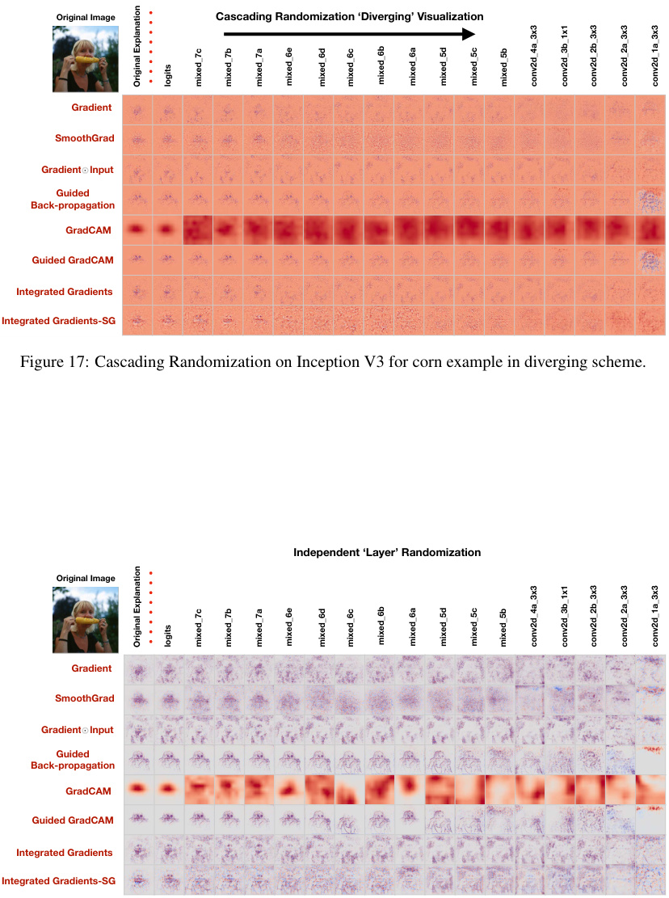
Original Image Cascading Randomization ‘Diverging’ Visualization
Gradient
SmoothGrad
Gradient I n put
Guided
Back-propagation
GradCAM
Guided GradC A M
Integrated Gradients
Integrated Gradients-SG
Figure 17: Cascading Randomization on Inception V3 for corn example in diverging scheme.
Independent ‘Layer’ Randomization
Original Image
Gradient
SmoothGrad
Gradient I np ut
Guided
Back-propagation
GradCAM
Guided GradC AM
Integrated Gradients
Integrated Gradients-SG
Original Explanation logits mixe d_ 7c mixe d _7b mixe d _7a mixe d _6e mixe d 6d mixe d 6c mix ed _6b mixe d _6a mixe d _5d mixe d _5c mixe d _5b 2d _4a_3x3conv 2d _3b_1x1conv 2 d_2b_3x3conv 2 d_2a_3x3conv 2 d_1a_3x3conv
Original Explanation logits mixed_7c mixed_7b mixed_7a mixed_6e mixe d 6d mixe d 6c mix ed _6b mixe d _6a mixe d _5d mixe d _5c mixe d _5b 2d _4a_3x3conv 2d _3b_1x1conv 2d _2b_3x3conv 2d _2a_3x3conv 2d _1a_3x3conv
Figure 18: Independent Randomization on Inception V3 for corn example.
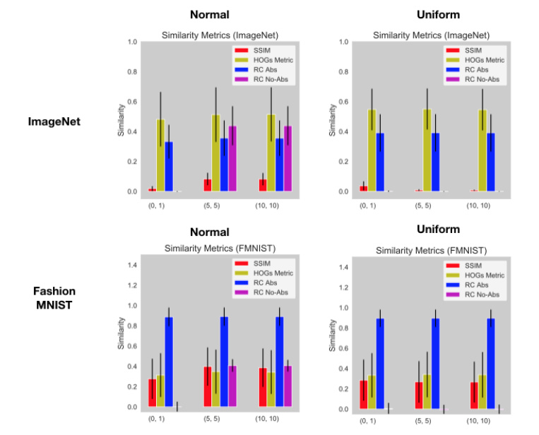
Figure 19: Input ⊙ Random gradient experiment.
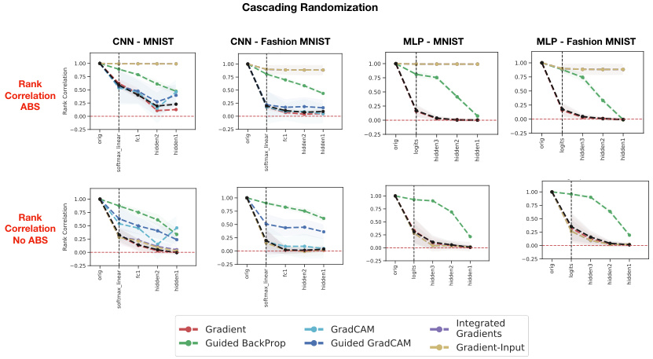
Cascading Randomization
CNN - MNIST CNN - Fashion MNIST MLP - MNIST MLP - Fashion MNIST
Rank
Correlation
ABS
Rank
Correlation
No ABS
Figure 20: Additional cascading rank correlation metrics across MNIST and Fashion MNIST Convolutional Networks.
Independent randomization Fashion MNIST
Inde pen dent random iza ti on MN IST
Figure 21: Additional independent rank correlation metrics across MNIST and Fashion MNIST Convolutional Networks.
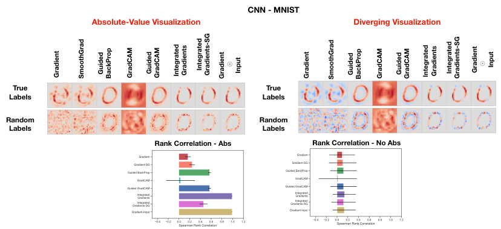
CNN - MNIST
Absolute-Value Visualization Diverging Visualization
True True
Labels Labels
Random Random
Labels Labels
Rank Correlation - Abs Rank Correlation - No Abs
Gradient SmoothGrad Guided BackProp GradCAM Guided GradCAM Integrated Gradients Integrated Gradients-SG Gradient Input Gradient SmoothGrad Guided BackProp GradCAM Guided GradCAM Integrated Gradients Integrated Gradients-SG Gradient Input
Figure 22: Comparison between explanations for a true model and one trained on random labels. CNN on MNIST.
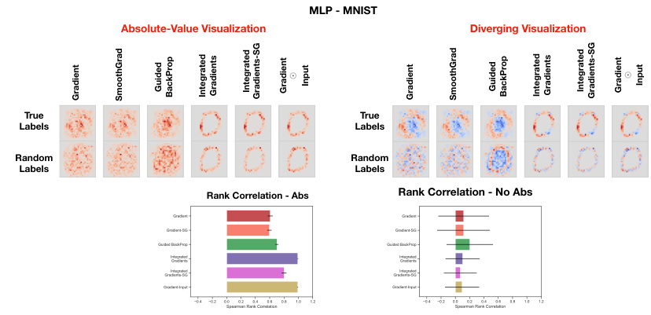
MLP - MNIST
Absolute-Value Visualization Diverging Visualization
True True
Labels Labels
Random Random
Labels Labels
Rank Correlation - Abs Rank Correlation - No Abs
Input Input
Gradient SmoothGrad Guided BackProp Integrated Gradients Integrated Gradients-SG Gradient Gradient SmoothGrad Guided BackProp Integrated Gradients Integrated Gradients-SG Gradient
Figure 23: Comparison between explanations for a true model and one trained on random labels. MLP on MNIST.
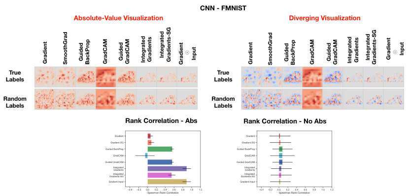
CNN - FMNIST
Absolute-Value Visualization Diverging Visualization
True True
Labels Labels
Random Random
Labels Labels
Rank Correlation - Abs Rank Correlation - No Abs
Gradient SmoothGrad Guided BackProp GradCAM Guided GradCAM Integrated Gradients Integrated Gradients-SG Gradient Input Gradient SmoothGrad Guided BackProp GradCAM Guided GradCAM Integrated Gradients Integrated Gradients-SG Gradient Input
Figure 24: Comparison between explanations for a true model and one trained on random labels. CNN on FMNIST.
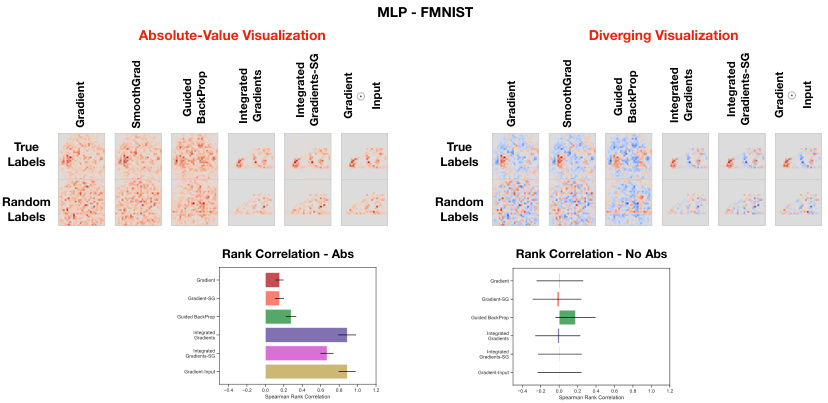
MLP - FMNIST
Absolute-Value Visualization Diverging Visualization
True True
Labels Labels
Random Random
Labels Labels
Rank Correlation - Abs Rank Correlation - No Abs
Input Input
Gradient SmoothGrad Guided BackProp Integrated Gradients Integrated Gradients-SG Gradient Gradient SmoothGrad Guided BackProp Integrated Gradients Integrated Gradients-SG Gradient
Figure 25: Comparison between explanations for a true model and one trained on random labels. MLP on FMNIST.
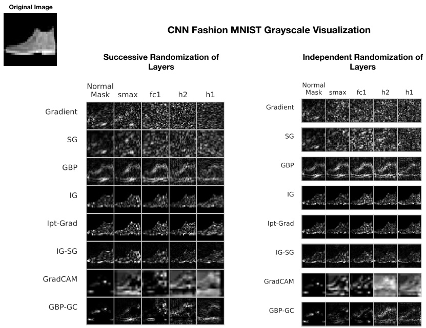
Original Image
CNN Fashion MNIST Grayscale Visualization
Successive Randomization of Independent Randomization of
Layers Layers
Figure 26: Successive and Independent Layer Randomization: Fashion MNIST.
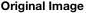
Original Image
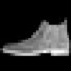
CNN Fashion MNIST Diverging Visualization
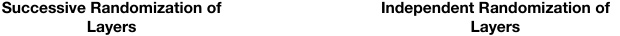
Successive Randomization of Independent Randomization of
Layers Layers
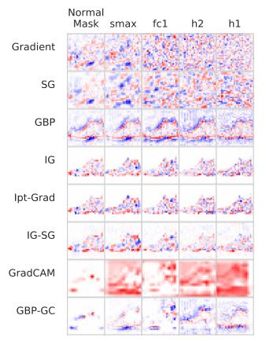
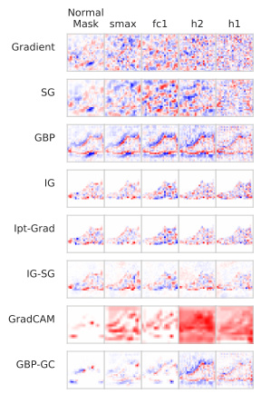
Figure 27: Successive and Independent Layer Randomization: Fashion MNIST diverging visualization.
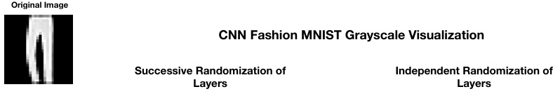
Original Image
CNN Fashion MNIST Grayscale Visualization
Successive Randomization of Independent Randomization of
Layers Layers
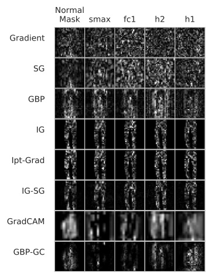
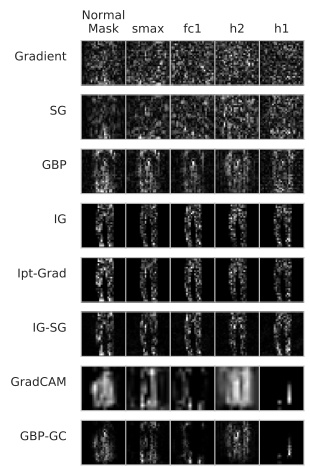
Figure 28: Successive and Independent Layer Randomization: Fashion MNIST grayscale visualization.
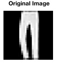
Original Image
CNN Fashion MNIST Diverging Visualization
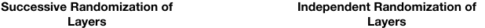
Successive Randomization of Independent Randomization of
Layers Layers
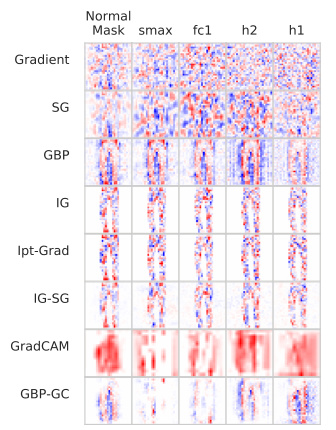
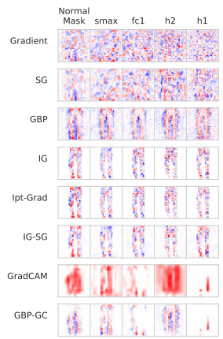
Figure 29: Successive and Independent Layer Randomization: Fashion MNIST diverging visualization.
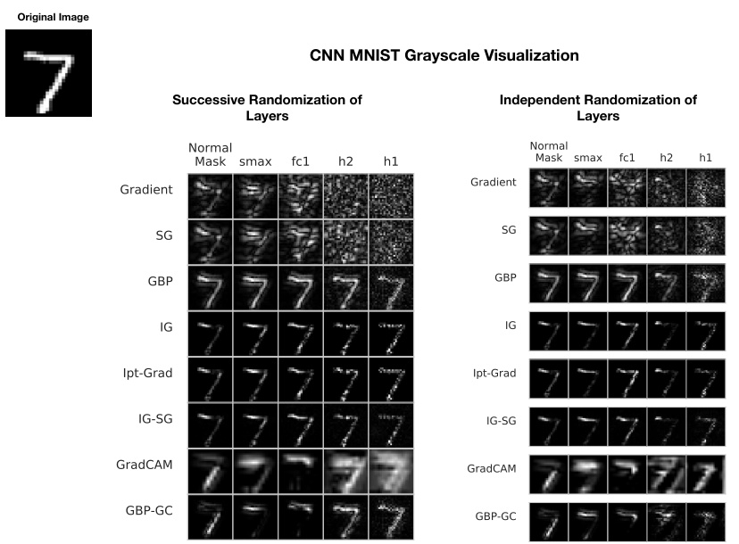
Original Image
CNN MNIST Grayscale Visualization
Successive Randomization of Independent Randomization of
Layers Layers
Figure 30: Successive and Independent Layer Randomization: MNIST.
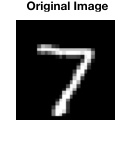
Original Image
CNN MNIST Diverging Visualization
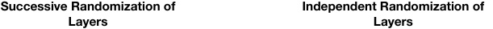
Successive Randomization of Independent Randomization of
Layers Layers
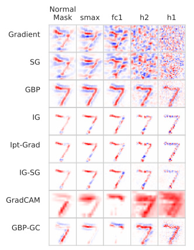
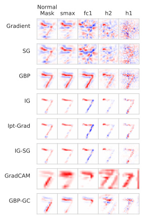
Figure 31: Successive and Independent Layer Randomization: MNIST diverging visualization.
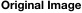
Original Image
CNN MNIST Grayscale Visualization
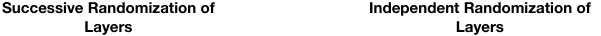
Successive Randomization of Independent Randomization of
Layers Layers
Figure 32: Successive and Independent Layer Randomization: MNIST grayscale visualization.
CNN MNIST Diverging Visualization
| Successive Randomization of | Independent Randomization of |
|---|---|
| Layers | Layers |
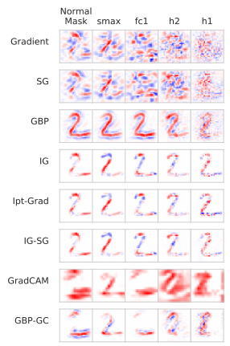
Figure 33: Successive and Independent Layer Randomization: MNIST diverging visualization.
Original Image
MLP MNIST
Successive Randomization of
Successive Randomization of
Layers
Layers
Figure 34: Successive and Independent Layer Randomization: MLP MNIST diverging and Grayscale visualization.
Original Image
MLP on Fashion MNIST
Successive Randomization of Successive Randomization of
Layers Layers
Figure 35: Successive and Independent Layer Randomization: MLP Fashion MNIST diverging and Grayscale visualization.
layer Top Cascading randomization Completely random
randomized from top to bottom layers for AlexNet network
Original FC8 FC7 FC6 Conv5 Conv4 Conv3 Conv2 Conv1
Mask
Figure 36: Cascading randomization from top to bottom layers on AlexNet for Perturbation Method.
Gradient
IG GBP
Gradient SmoothGrad
RGB
Gray Scale
Input
A
B
Input
Gradient GBP Guided GradCAM IG Gradient
Figure 37: A: Single layer sum-convolutional figure from the paper. B:Saliency maps from input image, and input image × edge detector is visually similar.